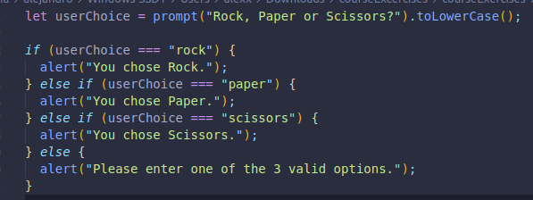

It is the last piece of an if conditional, it is not obligatory to include. It would follow if and else if.
The else statement doesn´t need parenthesis, only an opening and closing curly brace where the action we want will go.
We have made a prompt for the user to enter one of three valid options, rock, paper or scissors.
We used the .toLowerCase() to make sure whatever the user enters, it is converted to lower case. If the user enters ROCK PaPeR or sciSSors, we will still be able to compare it with our expected values.(which we placed in our conditionals in lowercase.)
We could´ve used toUpperCase() and set our expected values in capital letters too.
In the case that the user does not enter one of the 3 options, an alert will appear saying to enter a valid option.
Here we have a random number generated between and including 1 and 10.
If the number is 5 or less, there will be one message, if it is more than 5, there will be another.
In both cases, the number will be shown in the console. We placed that code outside the braces, it is a better practice, rather than to have placed the code inside both conditions.
There was no need to add the second condition about the number being 5 or less, since half of the opptions have already been covered with the conditional we DID declare.
Here we are deciding what will be logged to the console based on a word.
We are using all 3 conditionals in the correct order: if, if else and else.